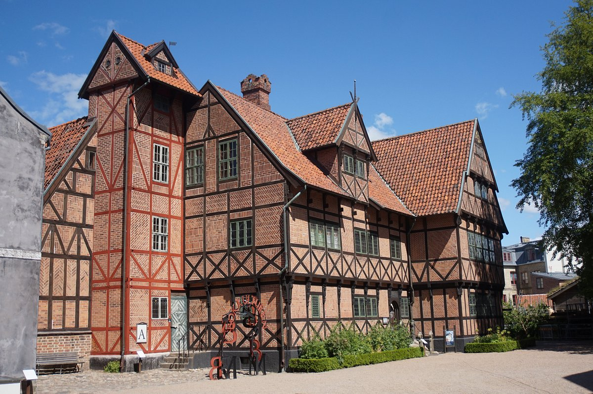
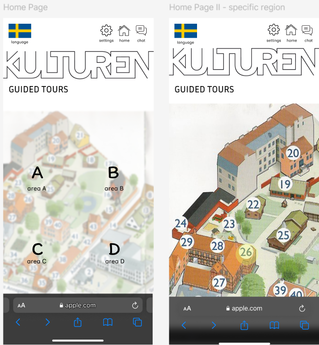
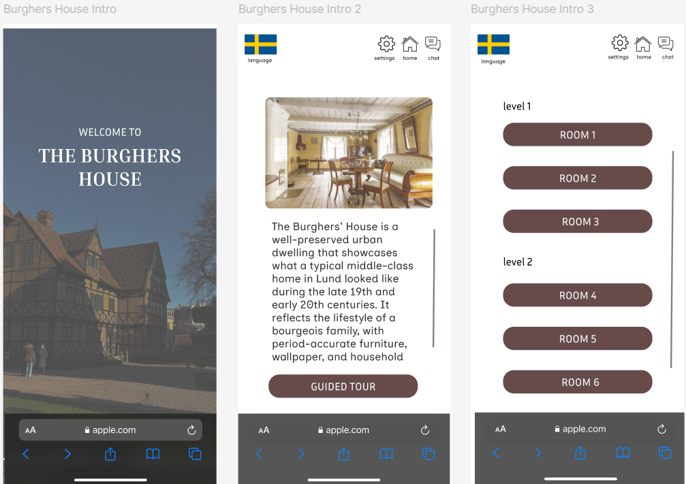
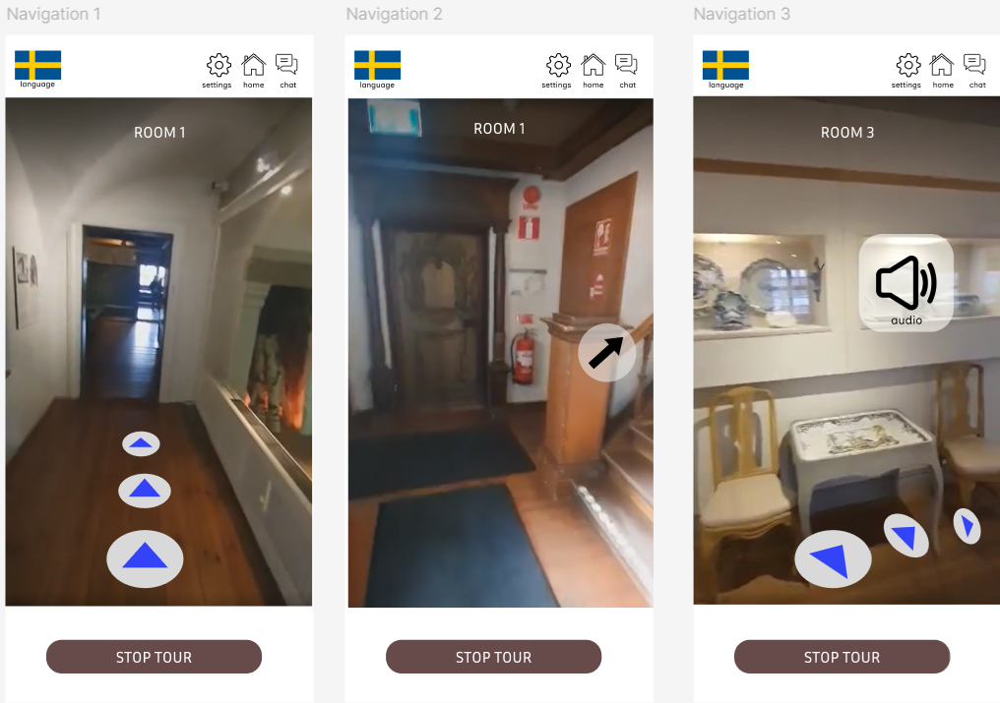
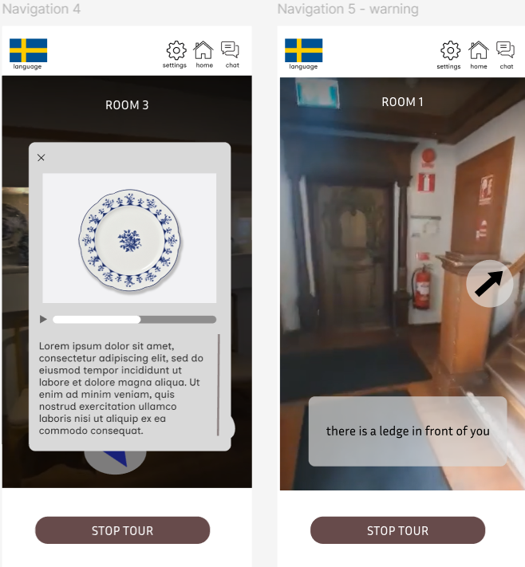
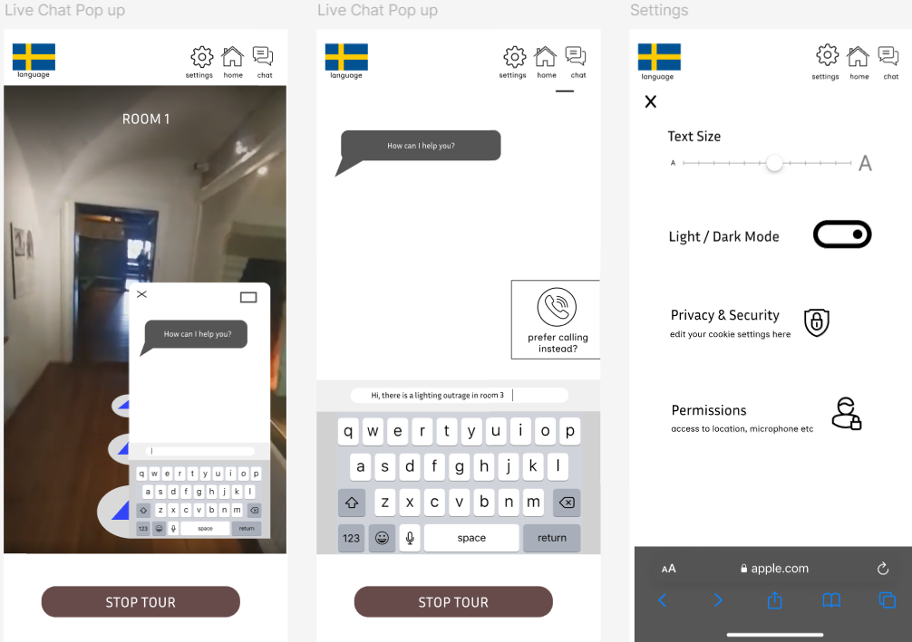

Improving Accessibility in Kulturen
During my exchange program in Lund, Sweden, I had the opportunity to work on a design project focused on improving accessibility at Kulturen, a local open-air museum. We specifically focused on the Burgher's House.
The museum faced several challenges in providing an inclusive experience for all visitors — from unclear entrances and the absence of ramps to poorly marked exhibits and narrow, dimly lit staircases. As part of our module, my team conducted on-site visits to identify these issues firsthand.
In response, we proposed a mobile app solution to guide users through the museum in a way that accommodates different accessibility needs. I designed the app prototype using Figma, with features such as adjustable font sizes, an audio tour option, real-time obstacle alerts, and a 24/7 chatbot for assistance. This project was a valuable learning experience that deepened my understanding of inclusive design through real-world problem-solving.
Images of the Burgher's House
Top Bar: The app is designed to give users full freedom and control throughout their museum experience. A persistent top bar allows easy access to key functions such as changing the language, returning to the homepage, accessing personal settings, and launching the chatbot — all from any page in the app.
We structured the app to be scalable, so Kulturen can eventually use it across multiple museum sites, not just the Burgher's House. Users are able to select which specific museum or area they would like to explore, making the app adaptable for future expansion.
Once a user selects their desired museum, a short introduction provides historical context and an overview of the space. To give users more flexibility, the app also allows them to choose their preferred starting point — whether that’s the first floor or a specific room they want to visit.
The app offers a guided walkthrough that uses the user’s physical location and camera to lead them through the museum in a smooth and intuitive flow. As they move through the space, users can also tap on nearby exhibits to access detailed descriptions and information.
All exhibit descriptions are provided in both visual and audio formats to support visitors with different accessibility needs. For users with visual impairments, the app can issue real-time audio warnings when obstacles like stairs or ledges are detected nearby, enhancing both safety and independence.
The app’s settings are fully customizable to suit each user’s preferences — whether it's adjusting text size for older visitors or enabling additional accessibility features. For added support, a 24/7 chatbot is available to answer questions, and a phone call option is included for users who prefer speaking over typing.